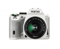

器材库 > APS及其以下画幅可换镜头数码相机 > K-S2

规格总览
产品类型
APS画幅可换镜头数码相机
发布日期
2015-04-10
影像规格
影像传感器
CMOS
影像传感器尺寸
23.5×15.6mm
总像素
2042万万
有效像素
2012万万
最大解像度
5472x3648
静态图像格式
JPEG, RAW, RAW+JPEG
静态图像质量
5472x3648
短片尺寸
1920 × 1080 / 30p
短片格式
MOV
镜头和对焦
镜头卡口
Pentax AF
兼容镜头
KAF3 KAF2 KAF KA卡口
对焦系统类型
TTL相位差异自动对焦
对焦点
11点对焦（中央9个对焦点为十字型）
AF辅助灯
有
手动对焦
支持
曝光控制
快门类型
电子控制，纵走式，焦平面快门
快门速度
1/6000秒～30秒、长时间曝光
曝光补偿
±5EV
ISO感光度
100, 51200
连拍
5.4fps
闪光灯
内置闪光灯
弹出式
取景器/显示屏
取景器
五棱镜取景器
取景范围
100%
取景放大倍率
约0.95倍倍
LCD尺寸
3.0英寸
LCD像素
92.1万万
视野率
100%%
Live View
有
文件输入/输出
存储卡
SD/SDHC, SDXC
电源
电池
充电式锂离子电池D-LI109
机身规格
尺寸
约122.5mm（宽）×91mm（高）×72.5mm（厚）mm
重量
约618g(仅机身)g
御前侍卫带刀2017-07-18 01:335 分
操作性 5.00功能性 5.00美观性 5.00趣味性 5.00耐用性 5.00性价比 5.00解像力 5.00色彩还原 5.00
产品图 / 样片
1
评测 / 相关文章
该产品暂无存档的评测文章
相关文章
- ［资讯］拆解宾得K-S2修复光圈不能自动打开的故障 （原站已下线）
- ［资讯］理光发布宾得K-S2新固件升级 （原站已下线）
- ［试用］旋转屏+Wi-Fi更实用 理光宾得K-S2评测
- ［资讯］理光发布全新单反相机K-S2 （原站已下线）
- ［资讯］理光新机K-S2定价已出 （原站已下线）
- ［资讯］理光推出宾得K-S2色彩定制服务 （原站已下线）